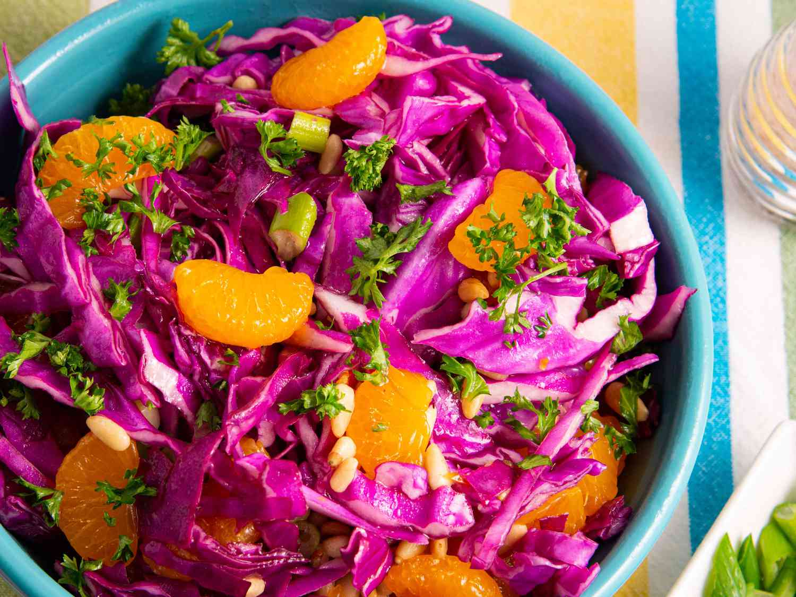

Purple Cabbage Salad

Description
This vibrant Purple Cabbage Salad is not only visually stunning but also incredibly delicious and nutritious. Crisp purple cabbage is combined with a tangy dressing and crunchy toppings to create a refreshing side dish that complements any meal.
Ingredients
- 1/2 small purple cabbage, thinly sliced
- 1 carrot, shredded
- 1/4 cup thinly sliced red onion
- 1/4 cup chopped fresh cilantro or parsley
- 1/4 cup sliced almonds, toasted
- 1/4 cup dried cranberries or raisins
- 2 tablespoons apple cider vinegar
- 1 tablespoon honey or maple syrup
- 1 tablespoon Dijon mustard
- 2 tablespoons extra virgin olive oil
- Salt and freshly ground black pepper to taste
Steps
- In a large bowl, combine the sliced purple cabbage, shredded carrot, sliced red onion, chopped cilantro or parsley, toasted almonds, and dried cranberries or raisins.
- In a small bowl, whisk together the apple cider vinegar, honey or maple syrup, Dijon mustard, and extra virgin olive oil until well combined. Season with salt and pepper to taste.
- Pour the dressing over the cabbage mixture and toss until everything is evenly coated.
- Let the salad sit for at least 10 minutes before serving to allow the flavors to meld together.
- Give the salad a final toss before serving, and enjoy!